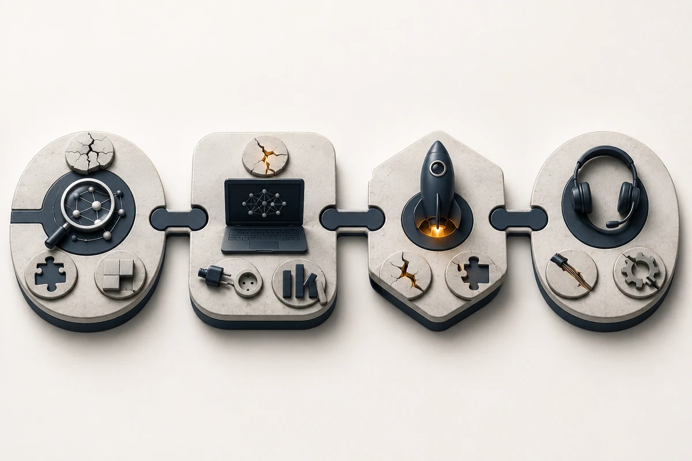
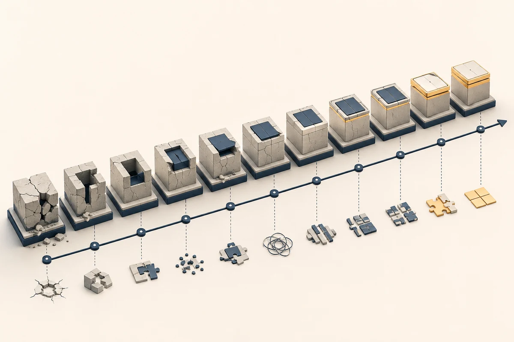

Гайд · ИИ для бизнеса
Ошибки внедрения ИИ в компании: 10 типовых провалов и как их избежать
Десять самых частых ошибок внедрения ИИ в компании, разобранных по стадиям и ролям. Кейс провала автоматизации поддержки в B2B SaaS, расчёт цены ошибки «нет лимита расходов» в 1,45 млн ₽ и рабочий шаблон против каждой из ошибок.
Автор · проверено 22 мая 2026 г.

Содержание
Краткое резюме
Gartner ещё в июле 2024 года предупреждал, что не менее 30% корпоративных проектов генеративного ИИ будут остановлены после проверки концепции к концу 2025 года. Российский анализ от «Яков и Партнёры» подтверждает порядок: эффект от внедрений получает меньше четверти запустивших компаний. И почти всегда — по одному из десяти типовых сценариев провала.
| # | Ошибка | Стадия | Частота |
|---|---|---|---|
| 1 | Старт с инструмента, а не с процесса | выбор | очень частая |
| 2 | Нет владельца результата внутри компании | выбор / пилот | очень частая |
| 3 | Хаотичные или неполные данные | пилот | частая |
| 4 | Нет лимита расходов и алертов | пилот / запуск | частая |
| 5 | Нет логов и контроля качества | запуск / поддержка | частая |
| 6 | Не считается экономика проекта | выбор / запуск | очень частая |
| 7 | Сценарий с высокой ценой ошибки первым | выбор | частая |
| 8 | Команда не готова работать с ИИ как с ассистентом | пилот / запуск | средняя |
| 9 | Игнорирование 152-ФЗ и регуляторных рамок | запуск | средняя |
| 10 | Преждевременное масштабирование | запуск | средняя |
Главная мысль: 80% провалов ИИ-проектов — это повторение одних и тех же ошибок. Их можно распознать заранее и стоят они меньше, чем кажется.
Чтобы не наступать на знакомые грабли, имеет смысл сверяться с опорными гайдами по выбору первого проекта — как внедрить ИИ в бизнес в 2026 году — и по бюджету — сколько стоит внедрение ИИ в компанию.
Когда нужен внешний взгляд
Проверьте свой пилот на типовые ошибки
Если уже запустили пилот и сомневаетесь, попадаете ли в одну из десяти ошибок — имеет смысл разобрать архитектуру вместе с практиком до того, как ошибка станет дорогой.
Оставить заявку на разборКто и на какой стадии чаще ошибается
Ошибки внедрения распределяются по стадиям и ролям предсказуемо. Если знать паттерн — половина рисков снимается на этапе выбора процесса.
| Стадия | Главный тип ошибки | Кто чаще принимает решение |
|---|---|---|
| Выбор сценария | старт с инструмента, нет владельца, неверный приоритет | собственник, CEO, COO |
| Пилот | хаотичные данные, нет лимита расходов, нет метрики | руководитель проекта, владелец метрики |
| Запуск в работу | нет логов, нет контроля, регуляторные дыры | технический подрядчик, IT-руководитель |
| Поддержка | команда не принимает, масштаб без проверки | руководитель отдела + HR |
Анти-паттерны верхнего уровня очень устойчивы: «давайте сделаем GPT-чат в компании», «у нас уже есть лицензия — попробуем что-то с ИИ», «давайте автоматизируем всё HR». Каждая из этих фраз — признак, что проект стартует от инструмента, а не от процесса.
Ошибки внедрения ИИ: десять самых частых паттернов

1. Старт с инструмента вместо процесса
Что выглядит. «Хочется попробовать ChatGPT в продажах», «давайте сделаем нашу базу знаний на ИИ», «всем выдадим Claude — посмотрим эффект».
Почему это ошибка. Инструмент сам по себе не даёт результата. Эффект появляется, когда модель встраивается в конкретный повторяющийся процесс с измеряемой метрикой. Без процесса инструмент превращается в дорогую игрушку, которую сотрудники открывают раз в неделю.
Что делать вместо. Сначала выбрать процесс (повторяемость >50 раз/мес, понятная метрика, низкая цена ошибки), потом — модель и обвязку. Подробный разбор выбора первого процесса — в гайде какие бизнес-процессы автоматизировать с помощью ИИ.
2. Нет владельца результата внутри компании
Что выглядит. Проектом «занимается подрядчик», внутри компании — два-три согласующих без формальной ответственности за метрику.
Почему это ошибка. ИИ-пилот требует регулярных решений: какие правила, какие шаблоны, что считаем ошибкой, когда останавливаем. Подрядчик не может принять эти решения за компанию. Без владельца метрики проект движется по инерции и заканчивается отчётом без бизнес-результата.
Что делать. До запуска пилота назначить одного человека, который отвечает за метрику и принимает решение stop/go. Это должен быть собственник, CEO, COO или руководитель отдела — не «маркетинг» или «ИТ» вообще.
3. Хаотичные или неполные данные
Что выглядит. Примеры процесса разбросаны по почте, чатам, Excel и CRM; нет 100+ размеченных пар «вход → правильный выход»; правила меняются от менеджера к менеджеру.
Почему это ошибка. Модели нужно показать, что значит правильный результат для вашей задачи. Без 100–300 чистых примеров она будет выдавать «среднее правдоподобное» — что хорошо для презентации и плохо для бизнеса.
Что делать. До запуска пилота: выгрузить 6 месяцев истории процесса, отнормализовать формат, разметить вручную минимум 100 примеров. Это занимает 8–20 часов работы аналитика или владельца — без этих часов запуск пропускать нельзя.
4. Нет лимита расходов и алертов
Что выглядит. Команда подключает API GigaChat/YandexGPT/OpenAI без лимита расходов. Разработчик ошибается в коде, агент зацикливается, либо рекурсивный вызов начинает гонять тысячи запросов в час.
Почему это ошибка. Без лимита и алерта счёт может вырасти на десятки тысяч рублей за ночь незаметно. У OpenAI/Anthropic в долларах ошибка дороже — известны случаи $5–15 тыс. за сутки на одной ошибке промпт-инжиниринга.
Что делать. До первого тестового запроса: установить hard-cap (например, 3–10 тыс ₽/мес для пилота), включить email-алерт при 50% и 80% бюджета, ограничить максимум токенов в одном запросе и количество запросов в минуту. Это стандартный гигиенический минимум — не оптимизация.
5. Нет логов и контроля качества
Что выглядит. Пилот работает, но никто не смотрит, что отвечает модель. Качество оценивают через 3 месяца по жалобам клиентов или менеджеров.
Почему это ошибка. ИИ-системы дрейфуют: меняются входные данные, появляются новые типы запросов, регуляторика обновляется. Без регулярного контроля качества пилот незаметно превращается из ассистента в источник ошибок.
Что делать. С первого дня: писать в логи каждый запрос и ответ модели, раз в неделю выгружать выборку из 50–200 ответов и оценивать руками (точность, формат, безопасность). Назначить владельца качества — это может быть тот же владелец метрики.
6. Не считается экономика проекта
Что выглядит. «Внедрили ИИ — стало быстрее». Цифр нет, сравнение «до/после» не сделано, ROI неизвестен.
Почему это ошибка. Без числа невозможно принять решение stop/go и невозможно защитить бюджет на расширение. Через 6 месяцев проект превращается в «у нас же есть ИИ» без понимания возврата.
Что делать. До пилота посчитать текущую стоимость операции (часы × ставка + явные расходы). После пилота — посчитать тот же показатель в новых условиях. Полный шаблон расчёта — в гайде сколько стоит внедрение ИИ в компанию.
7. Сценарий с высокой ценой ошибки первым
Что выглядит. Первый пилот — автоматическое одобрение кредитов, медицинские рекомендации, юридические заключения, увольнения, обработка спецкатегорий персональных данных.
Почему это ошибка. У ИИ остаётся встроенная доля ошибок (галлюцинации, неверная классификация, дрейф). На задачах, где одна ошибка стоит компании репутации или штрафа Роскомнадзора, эту долю никаким способом не довести до приемлемого уровня без человеческой проверки.
Что делать. Первый пилот выбирать в зоне «низкая цена ошибки + ручная проверка финального решения». Для высокорискованных сценариев ИИ — рекомендатель, а не лицо, принимающее решение. Регуляторные вопросы для российских компаний разбираются в разделе «ИИ в России».
8. Команда не готова работать с ИИ как с ассистентом
Что выглядит. Сотрудники воспринимают пилот как угрозу рабочему месту: саботируют тесты, игнорируют рекомендации модели, отчитываются «всё хорошо» без реальной работы.
Почему это ошибка. Без вовлечения людей, которые работают рядом с ИИ, пилот не даст качественных данных и не доберётся до решения stop/go. Конфликт интересов не лечится технологически.
Что делать. Перед стартом пилота — короткий разговор с командой: какую часть рутины снимаем, что остаётся за человеком, как меняется зарплата и KPI. Главное правило коммуникации: ИИ снимает рутину; решения остаются за людьми; KPI не привязываем к снижению численности команды первые 6 месяцев.
9. Игнорирование 152-ФЗ и регуляторных рамок
Что выглядит. Российская компания обрабатывает имена, телефоны, email, заказы клиентов через OpenAI или Claude без обработки данных через посредника в РФ. Договор не оформлен на компанию, журнал обращений отсутствует.
Почему это ошибка. Это прямое нарушение 152-ФЗ. Цена ошибки — штраф Роскомнадзора (от десятков тысяч до нескольких миллионов рублей за тираж нарушения) и репутационный риск при утечке. С 2025 года штрафы выросли многократно.
Что делать. Для российских клиентских данных использовать GigaChat / YandexGPT с договором на российское юрлицо и хранением в РФ. Для спецкатегорий — отдельная архитектура и юрист. Для зарубежных клиентов — формализовать согласие на обработку и убедиться, что архитектура соответствует местному законодательству.
10. Преждевременное масштабирование
Что выглядит. Пилот показал многообещающие результаты на 100 примерах. Команда сразу разворачивает решение на всю компанию, на все продукты, на всех клиентов.
Почему это ошибка. Метрики пилота на 100 примерах не равны метрикам на 100 000. Узкие места проявляются только под нагрузкой: реальная нагрузка на API, edge-cases в данных, неожиданные сегменты пользователей. Резкое масштабирование без контроля приводит к массовым ошибкам и репутационным рискам.
Что делать. После успешного пилота — второй этап на 10× больше входов (1000 примеров вместо 100), затем третий — на полный поток. На каждом этапе фиксировать метрики и сравнивать с предыдущим.
Кейс: провал автоматизации поддержки в B2B SaaS
Ситуация. B2B SaaS-сервис документооборота, 55 сотрудников, 800 корпоративных клиентов, 1 200 обращений в поддержку в месяц. Руководитель решает внедрить ИИ-чат-бот «чтобы разгрузить операторов». Подрядчик подключает OpenAI API, делает виджет на сайте, базу знаний собирает по верхнеуровневым FAQ.
Что сделали неправильно (3 ошибки сошлись одновременно).
- Ошибка #1: старт с инструмента. Идея — «давайте сделаем ИИ-бот», а не «решим проблему долгого ответа на типовые вопросы».
- Ошибка #3: хаотичные данные. База знаний собрана из 25 общих FAQ, реальных типовых вопросов — около 150 (50% переписки). Бот не покрывает 70% вопросов.
- Ошибка #5: нет логов и контроля. Никто не выгружает диалоги первые 6 недель.
Метрики провала через 8 недель.
- доля обращений с автоматическим ответом — 22% (план был 65%);
- доля жалоб клиентов на «бот не понимает» — 14% от обращений;
- доля обращений, эскалированных оператору с потерей контекста — 41%;
- NPS поддержки — −12 п.п. от среднего за 3 месяца;
- расходы на OpenAI API — 38 тыс ₽/мес (бюджет был 15 тыс ₽/мес, лимит не стоял).
Бизнес-логика. Компания закрывает пилот, увольняет подрядчика, теряет ~360 тыс ₽ на запуск, ~150 тыс ₽ на API за 4 месяца и больше всего — доверие клиентов и менеджеров поддержки к «ИИ-инициативам». Следующий пилот удаётся запустить только через 8 месяцев — после смены руководителя цифровой трансформации.
Что бы сработало. Та же команда могла получить рабочий пилот, если бы (а) начала с разбора реальных типовых вопросов по логам, (б) собрала FAQ из 150 пунктов, (в) поставила лимит API и алерт, (г) выгружала диалоги еженедельно и обновляла базу. Те же 6 недель, тот же бюджет — но с принципиально другим результатом.
Аналогичные кейсы — без названий компаний — регулярно появляются в новостях категории «ИИ-индустрия».
Когда нужна реанимация проекта
Спасти или закрыть провалившийся пилот?
Если пилот уже даёт плохие метрики, разбор корневых причин обычно показывает, можно ли спасти или дешевле закрыть и стартовать заново с другим процессом.
Обсудить проектWorked example: сколько стоит ошибка #4 (нет лимита расходов)
Ситуация. Стартап, 8 сотрудников, использует GPT-4o через API для автоматического реферирования входящих писем. Разработчик в пятницу вечером добавляет новый промпт для агентного цикла. Из-за ошибки в коде агент зацикливается на одном письме и делает по 600 запросов в минуту.
Данные сбоя.
- Длительность сбоя до обнаружения: 14 часов (с 19:00 пятницы до 09:00 субботы).
- Скорость запросов: 600 запросов/мин × 60 = 36 000 запросов/час.
- Длина запроса + ответа: 2 500 токенов в среднем.
- Цена GPT-4o (gpt-4o-2024-08-06, упрощённая модель счёта): ~$5 за 1М input + $20 за 1М output, итого ~$12,5 на 1М токенов смешанного потока.
Формула стоимости сбоя.
| Параметр | Расчёт | Сумма |
|---|---|---|
| Запросов за 14 часов | 600 × 60 × 14 | 504 000 |
| Токенов за 14 часов | 504 000 × 2 500 | 1,26 млрд |
| Стоимость, USD | 1,26 млрд / 1 млн × $12,5 | $15 750 |
| По курсу 92 ₽/$ | $15 750 × 92 | ~1,45 млн ₽ |
Результат. Один забытый лимит на API стоит компании 1,45 млн ₽ за выходные. Бюджет на проект был 200 тыс ₽/мес — то есть один сбой съел 7-месячный бюджет.
Что бы сработало.
- Hard-cap $300/мес на ключ API.
- Алерт по email при $150 потрачено.
- Лимит 60 запросов/мин на ключ.
- Cron-проверка raw-расходов раз в час со звонком ответственному при превышении.
Себестоимость гигиены — менее 4 часов работы разработчика. Стоимость её отсутствия — 1,45 млн ₽ за одну ошибку. Это самая выгодная страховка в инфраструктуре ИИ-проекта.
Российский контекст: 152-ФЗ, локальные модели, штрафы
Для российских компаний три темы регулярно становятся источником ошибок внедрения.
- 152-ФЗ «О персональных данных». Передача клиентских данных в OpenAI/Anthropic без обработки через российского посредника — типичный нарушающий сценарий. С 2025 года штрафы Роскомнадзора резко выросли: за повторное нарушение для юрлиц — до 18 млн ₽; за утечку с большим тиражом — до 500 млн ₽. Простое решение: GigaChat / YandexGPT для всех потоков с клиентскими данными.
- Спецкатегории. Медицинские данные, политические взгляды, биометрия — это спецкатегории по 152-ФЗ. ИИ-обработку таких данных нельзя строить «по аналогии» с обычной перепиской. Нужен отдельный юрист и DPIA.
- Маркировка ИИ-контента. Готовится регулирование (на конец мая 2026 в стадии обсуждения). Лучше заранее закладывать маркировку «сгенерировано ИИ» в коммуникации с клиентом, особенно в сегменте B2C и финуслугах.
- Локальная инфраструктура. GigaChat API, YandexGPT в Yandex AI Studio, российские конструкторы автоматизации (Albato) — всё это снимает значительную часть юридических рисков. При выборе подрядчика правильный вопрос — «где будут храниться данные клиента и в чьём контуре».
Российские инициативы и кейсы — в разделе ИИ в России.
Вывод Malakhov AI

Девять из десяти провальных ИИ-проектов в 2026 году валятся по одной из десяти типовых причин. Каждая из них стоит от десятков тысяч до миллионов рублей; каждая снимается за 2–8 часов работы на старте.
Рабочий шаблон против ошибок короткий:
- Стартуем от процесса, а не от инструмента.
- Назначаем владельца метрики внутри компании.
- Готовим 100–300 примеров входов и выходов до первого запроса в API.
- Ставим hard-cap расходов и алерты с первого дня.
- Пишем логи и раз в неделю смотрим выборку ответов руками.
- Считаем экономику до пилота и после.
- Берём первый сценарий с низкой ценой ошибки.
- Говорим с командой до запуска, не после.
- Соблюдаем 152-ФЗ — для российских данных это GigaChat / YandexGPT.
- Масштабируем поэтапно: 10× по входным данным каждый шаг.
Любая ошибка из десяти выше предсказуема: 4 часа гигиены на старте часто экономят месяц работы и миллион рублей в конце. Эта арифметика повторяется в каждом кейсе провала.
FAQ
Какая самая частая ошибка внедрения ИИ в компании?
Старт с инструмента, а не с процесса. Когда пилот формулируется как «давайте попробуем ChatGPT в продажах», без выбора конкретного процесса с метрикой, результата нет. Эта ошибка лежит в основе примерно половины провальных проектов.
Почему AI-проекты не доходят до промышленного запуска?
Чаще всего из-за отсутствия владельца метрики внутри компании. Подрядчик может настроить технологию, но не может принять решение «продолжаем или закрываем». Без внутреннего владельца пилот зависает на стадии «технологически работает, но никто не считает эффект».
Сколько стоит ошибка «нет лимита расходов» на API?
В худших известных случаях — 1–2 млн ₽ за одну ошибку (зацикливание агента, рекурсивный вызов, забытый цикл). Это превышает месячный бюджет среднего пилота в 5–10 раз. Hard-cap и алерты стоят 4 часа работы разработчика на старте.
Как избежать штрафа Роскомнадзора при внедрении ИИ?
Для российских клиентских данных использовать модели, обработка которых идёт через российское юрлицо и хранение в РФ: GigaChat (Сбер), YandexGPT (Яндекс), их API-аналоги. Зарубежные модели для клиентских данных российских физлиц без специальной архитектуры использовать опасно с 2025 года, когда штрафы значительно выросли.
Можно ли спасти провалившийся ИИ-пилот?
Иногда — да, если корневая причина одна из «технических» (нет лимита, нет логов, плохие данные). Если корневых причин две и более, или одна из них — отсутствие владельца результата — экономнее закрыть пилот, зафиксировать выводы и стартовать заново через 2–3 месяца с новым процессом.
Кто внутри компании отвечает за результат ИИ-пилота?
Один человек с правом принять решение stop/go: собственник, CEO, COO, руководитель отдела, в чьём процессе крутится пилот. Не маркетинг, не ИТ, не «проектный офис». Без явного владельца проект движется по инерции и заканчивается без бизнес-результата.
Какой ИИ-проект НЕ стоит брать первым?
С высокой ценой ошибки: автоматическое одобрение кредитов, медицинские рекомендации, юридические заключения, увольнения, обработка спецкатегорий персональных данных. Здесь ИИ безопасно использовать только как рекомендатель под финальным контролем человека. Первый пилот логичнее запускать в зоне «низкая цена ошибки + ручная проверка».
Источники и данные
Материал проверен 22 мая 2026 года.
- Gartner, июль 2024. Прогноз отказа от 30% gen-AI проектов после PoC к концу 2025: https://www.gartner.com/en/newsroom/press-releases/2024-07-29-gartner-predicts-30-percent-of-generative-ai-projects-will-be-abandoned-after-proof-of-concept-by-end-of-2025
- «Яков и Партнёры», 2025. Анализ доли российских компаний, получающих эффект от gen-AI: https://yakov.partners/
- TAdviser. Каталог кейсов внедрения ИИ в российских компаниях, в том числе разборы провалов: https://www.tadviser.ru/index.php/ИИ
- CNews Analytics. Обзоры рынка корпоративного ИИ и автоматизации: https://www.cnews.ru/
- GigaChat API для юрлиц, 18 мая 2026. Тарифы и условия договора: https://developers.sber.ru/docs/ru/gigachat/tariffs/legal-tariffs
- 152-ФЗ «О персональных данных». Сводный текст и комментарии Роскомнадзора: https://rkn.gov.ru/personal-data/
- Роскомнадзор, обновлённые штрафы (с 2025). Информация о повышенных санкциях за нарушения обработки персональных данных: https://rkn.gov.ru/news/
Дальше
Что можно сделать после чтения
AI-новости в Telegram
Ежедневный короткий дайджест: релизы, инструменты, кейсы внедрения ИИ в бизнес.
Подписаться на дайджестАрхитектурный разбор ИИ
Разберите процессы, данные, риски и экономику до старта разработки.
Оставить заявкуЧто читать дальше
Связанные разделы
Как внедрить ИИ в бизнес в 2026 году
Опорный гайд по выбору первого проекта с ИИ, данным, экономике и рискам.
Сколько стоит внедрение ИИ в компанию
Бюджет, статьи расходов, калькулятор пилота и рабочего запуска.
Какие бизнес-процессы автоматизировать с помощью ИИ
Матрица выбора процесса по эффекту, сложности, риску и данным.